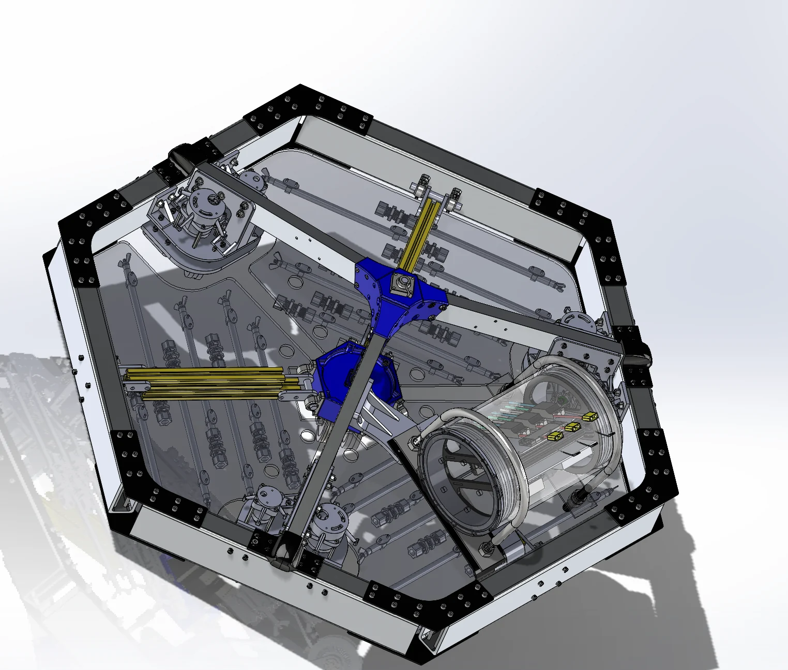
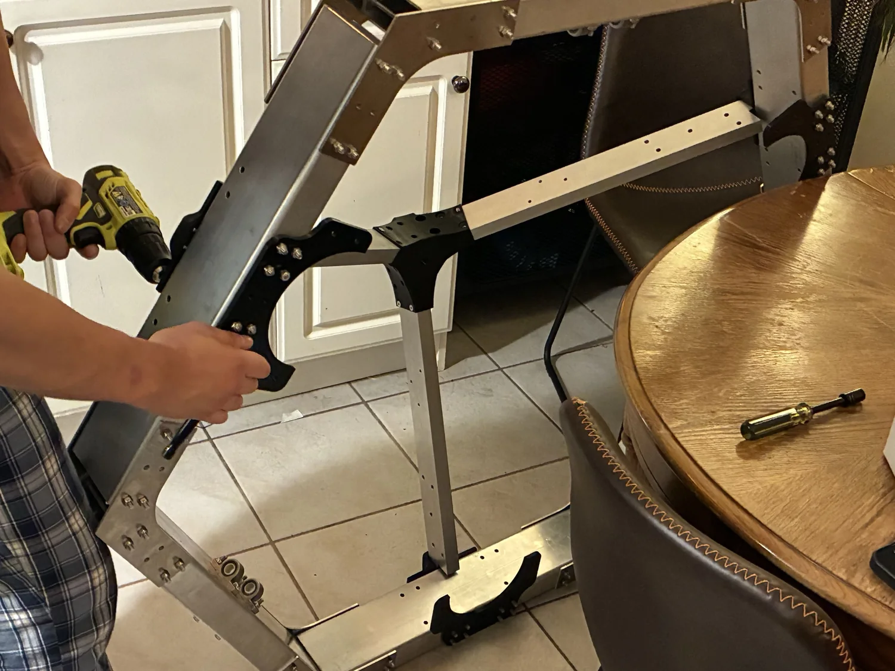

Current ZIMA CAD

A public-facing view of the system architecture direction behind ZIMA.
Technology overview
At a non-proprietary level, ZIMA combines an adhering subsea mobility platform, close-range UVC treatment, and repeatable passes designed to help container fleets stay ahead of early-stage fouling.

A public-facing view of the system architecture direction behind ZIMA.
Prevention first
ZIMA is being framed around frequent, controlled maintenance passes that fit fleet operations more naturally than reactive, last-minute intervention after the cost of growth has already compounded.
Operating logic
A subsea platform designed to move across hull surfaces in a controlled, repeatable way.
A treatment module positioned for prevention-focused operation rather than broad reactive cleaning.
The cadence matters: keep buildup from accumulating instead of waiting for heavy fouling later.
The initial focus is operator reality, repeatability, and consistency across a vessel maintenance program.
Simulation demo
This clip comes from 2:24 to 2:34 of the OppFest video and is included here specifically as a software demo of a simulated ZIMA. It helps show how the team is thinking about system behavior beyond the physical build itself.
That makes it a useful bridge between the visible hardware story and the software/control side of the product.
Trimmed from the OppFest video at 2:24 to 2:34 and used here as a simulated ZIMA software demo.
Industry Issues ZIMA Addresses
These are the three public problem areas that make the case for a prevention-first hull-maintenance approach.
Proactive cleaning reduces dependence on toxic antifouling paint. With ZIMA, Subvision is pursuing a path that could help shift maintenance away from traditional coatings-heavy approaches and toward earlier intervention.
ZIMA is designed to support cleaner hull upkeep before the pressure for harsher methods builds.
Biofouling increases fuel use, and frequent hull maintenance can help address that buildup from day one. ZIMA is aimed at reducing the drag-related pressure that turns maintenance neglect into recurring emissions cost.
The system is built around preventing the layer of drag that operators end up paying for later.
Nearly 80% of invasive marine species transfer is caused by biofouling hulls. By keeping hulls perpetually cleaner, ZIMA is aimed at reducing one of the most persistent pathways for marine ecosystem disruption.
A prevention-first maintenance rhythm protects not just vessels, but the waters they move through.
Development story
MOP established the first proof-of-concept hardware direction. Early robot testing moved the team into real environments. Current ZIMA CAD and larger assemblies now show a more coherent system built for serious conversations.
An early modular operating proof-of-concept that grounded the first systems thinking.
Poolside hardware tests turned the effort from isolated parts into integrated iteration.
CAD, assemblies, and public demos now reinforce one coherent product story around ZIMA.



Build and test media
Fabrication footage that shows the physical build work supporting the current system.
A test clip that keeps the technology page anchored in real experimentation.
Next milestone
If you are evaluating pilots, validation support, technical collaboration, or strategic partnership, the next step is a direct conversation.